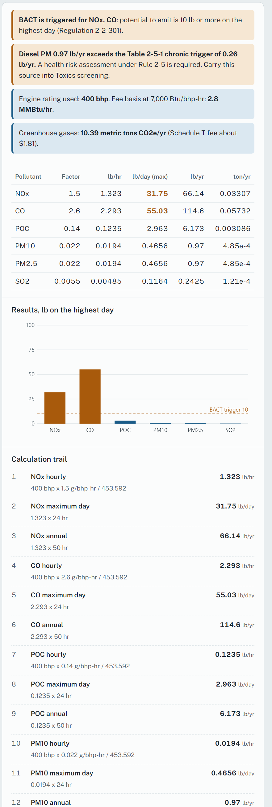

Air Permit Engineering Toolkit · Architecture
How the toolkit is built: the files, how a number travels from an input to a flag, how a project moves through the rules, and how every change is checked before it goes live.
Example: on the generator page, app.js reads the inputs, calc.js computes 1.323 lb/hr and returns each step, and app.js compares 31.75 lb/day with the 10 lb/day threshold from data.js to raise the BACT flag.
Every calculator page has the same parts, top to bottom:
| Flags | Plain-language findings with the rule cited: orange when a requirement is triggered, blue for information, red when a limit is exceeded. |
| Results table | Every pollutant in lb/hr, lb/day, lb/yr and ton/yr. Values at or above a threshold are highlighted. |
| Chart | The highest day per pollutant against the BACT line, or concentration against distance on the toxics page. |
| Calculation trail | Each step numbered, with the arithmetic and units, so it can be repeated by hand. |
| Sources and assumptions | The rule, table or document each default comes from. |
| Buttons | Add to project carries the source into the rule checks; Copy worksheet copies the trail as text for a report; Reset restores defaults. |

| File | Lines | Role |
|---|---|---|
| calc.js | 389 | All engineering functions: oxygen correction, ppm to lb/MMBtu, combustion, engine, flare, coating, control efficiency, Briggs dispersion and plume rise, residential and worker risk, Schedule B and D fees. Runs in the browser and in Node.js. |
| data.js | 80 | Rule values with their sources: NSR thresholds, CEQA chi/Q, Rule 2-5 limits, 20 toxic contaminants, gasoline factors, Regulation 3 fees. |
| app.js | 627 | The 11 calculator pages, worksheet rendering, charts, project list and shareable links. |
| index.html, style.css | 185 | Page shell, typography, color themes and the phone layout. |
| tests/verify.mjs | 136 | 50 automated checks against hand calculations and published values. |
| METHODS.md | 248 | The methods paper: every equation, default, rule version and reference. |
| tools/build_methods_pdf.py | 123 | Rebuilds the methods PDF from METHODS.md. |
| docs/ | Methods PDF (version 1.1) and the README screenshot. | |
| README.md, LICENSE | 79 | Overview, how to run locally, MIT license. |
| Group | Page | Main function | Rule or method |
|---|---|---|---|
| Estimate emissions | Boiler, heater or turbine | combustion | AP-42 1.4; 40 CFR 98 Subpart C |
| Diesel engine or generator | engine | Certified g/bhp-hr; Tier 4 defaults; kWe conversion | |
| Flare event | flare | AP-42 13.5; molar volume; DRE | |
| Coating or solvent use | coating | Permit Handbook 5.1 mass balance | |
| Gasoline dispensing | in app.js | CARB 2013 EVR factors; benzene | |
| Review the project | BACT and offset triggers | in app.js | Regulation 2-2-301, 302, 303 |
| Toxics screening and risk | dispersion, riskFromConc | Rule 2-5; CEQA calculator; OEHHA 2015; Turner 1994 | |
| Permit fees | feesScheduleB, feesScheduleD | Regulation 3, FY 2026-27 | |
| Check the math | Unit conversions | concConvert | EPA Method 19 |
| Control efficiency | controlEff | Capture × control train | |
| Methods and sources | in app.js | What the District already publishes; references |
The repository history shows how the tool was checked and corrected on November 15, 2026:
| Time | Commit | Change |
|---|---|---|
| 10:35 | e33d4dc | First release: emissions, NSR triggers, Rule 2-5 screening, Regulation 3 fees, methods, 44 checks |
| 10:41 | 065fae5 | Code review fixes: stable plume rise, peak-hour benzene for gas stations, one breathing rate matching the CEQA calculator, fees moved to data.js |
| 11:00 | d66faad | Deep Review fixes: a second control device now treats only the captured stream; methods paper expanded |
| 11:02 | 5cb7624 | Methods paper version 1.1 and PDF |
| 11:05 | 8844a00, 5420944 | PDF build script; README links |
| 11:12 | 098a05b | Unit wording on the toxics page |